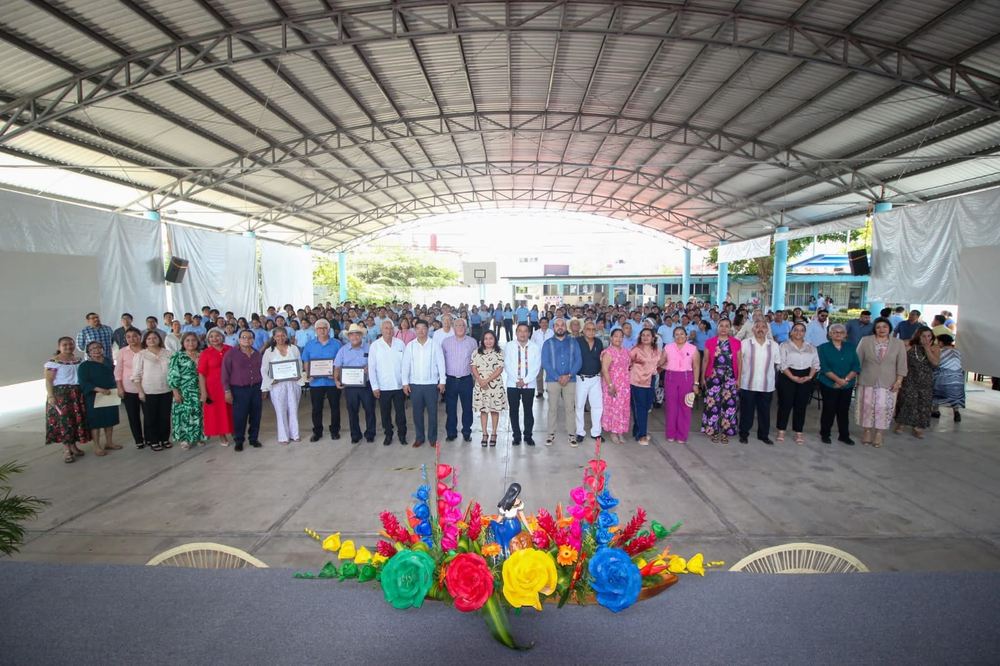
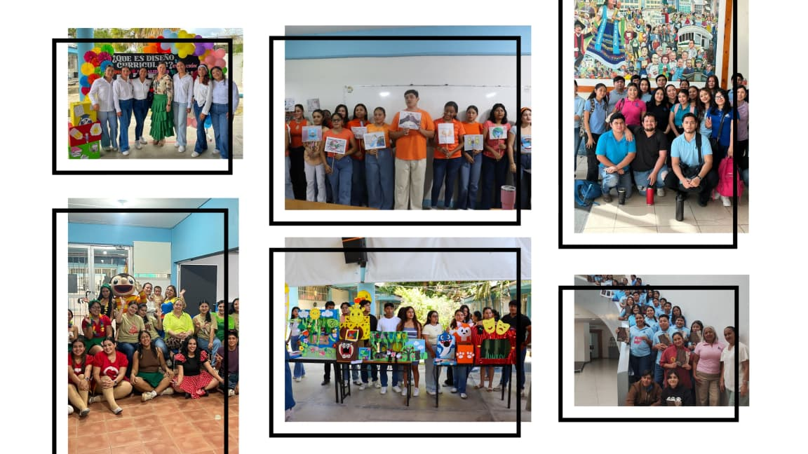
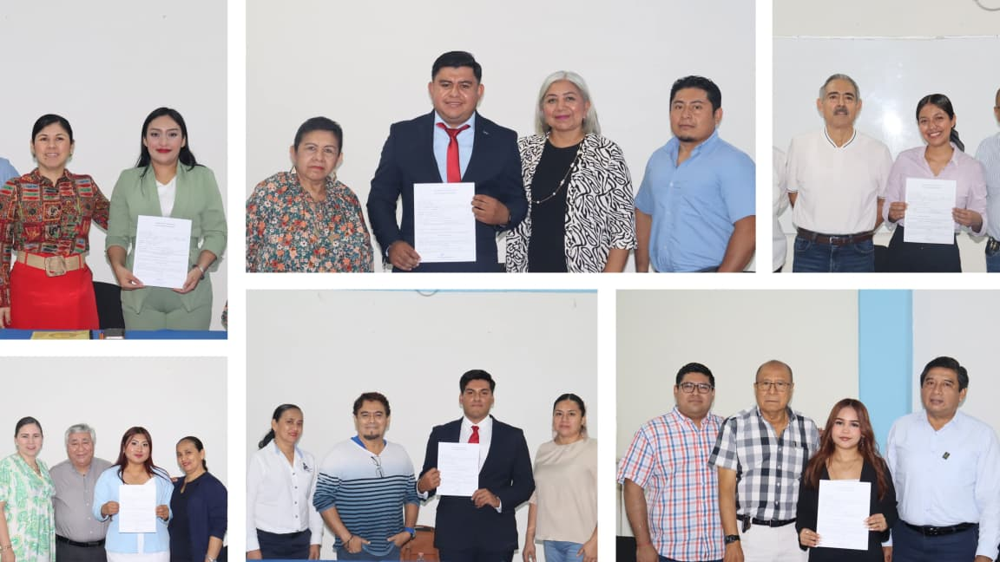
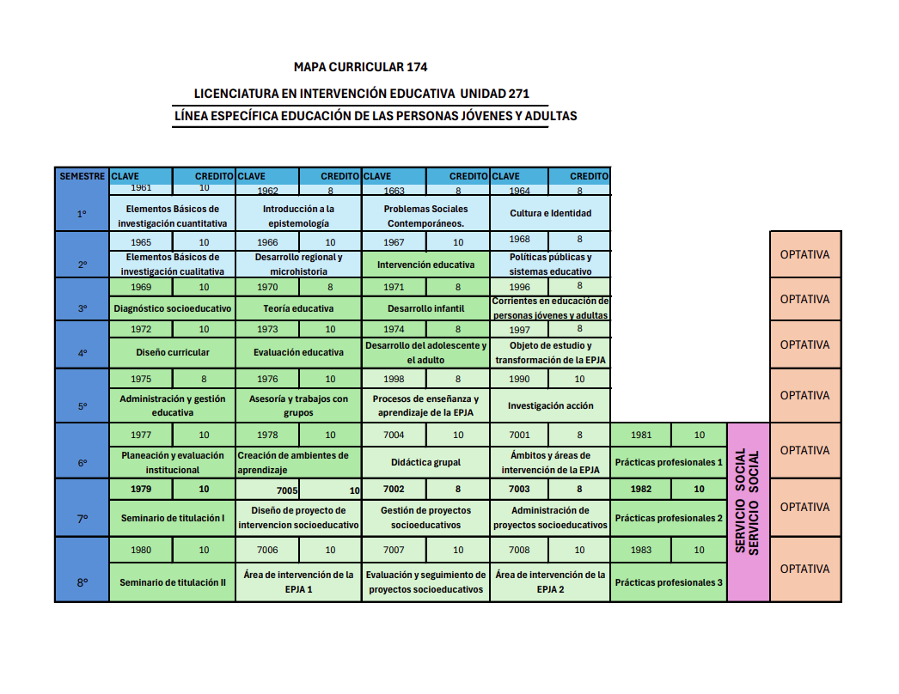

Presentación
La Universidad Pedagógica Nacional a través de la Licenciatura en Intervención Educativa, Plan 2002, pretende contribuir a la atención de necesidades sociales, culturales y educativas del país. Una característica de la LIE es la búsqueda de pertinencia social y educativa, para responder de manera adecuada a las especificidades socioculturales de los contextos donde se insertan las Unidades UPN. Las líneas específicas de formación en la licenciatura son: • Educación de las personas jóvenes y adultas • Gestión Educativa • Educación inicial • Interculturalidad • Inclusión social • Orientación educacional En la Unidad 271 se ofertan dos: Educación Inicial y Educación de personas jóvenes y adultas (EPJA). La línea de educación Inicial forma un profesional que conoce la importancia de la educación inicial y el proceso de desarrollo integral del niño de 0 a 4 años. Sus competencias profesionales le permiten diseñar y aplicar estrategias de intervención que favorecen el desarrollo del niño, atendiendo los factores individuales, familiares y sociales; y las instancias que influyen en este proceso. El línea de la Educación de las personas jóvenes y adultas (EPJA), está constituido por un amplio abanico de prácticas que abarcan la educación básica (alfabetización, primaria y secundaria), la capacitación en y para el trabajo, la educación orientada al mejoramiento de la calidad de vida, a la promoción de la cultura y al fortalecimiento de la identidad, así como a la organización y la participación democrática.
Objetivo General
Formar profesionales de la educación capaz de desempeñarse en diversos campos del ámbito educativo, a través de la adquisición de las competencias generales (el perfil de egreso), específicas (las adquiridas a través de las líneas profesionalizantes), que le permitan transformar la realidad educativa por medio de procesos de intervención.
Objetivos Específicos
- Diseñar e implementar estrategias de intervención educativa basadas en el análisis de contextos socioculturales y necesidades específicas de diversos grupos y comunidades.
- Evaluar procesos, programas y prácticas educativas mediante metodologías cualitativas y cuantitativas que permitan fortalecer la toma de decisiones y mejorar la calidad educativa.
- Promover proyectos de innovación educativa que fomenten la inclusión, el desarrollo integral y la mejora continua en instituciones y espacios no formales de aprendizaje.
Perfil de Ingreso
La licenciatura en intervención educativa se ofrece a egresados de nivel medio superior, profesores en servicio y profesionistas interesados en cursar una nueva carrera. Los antecedentes académicos que se espera posean los aspirantes son: conocimientos y habilidades básicas en filosofía, historia, lógica, matemáticas, lectura, expresión escrita y solución de problemas. Estos antecedentes se verificarán mediante el examen de ingreso. Por las características del plan de estudios es importante que los aspirantes demuestren interés, habilidades y actitudes para el trabajo socioeducativo y psicopedagógico, a su vez cuenten con tiempo completo, medio tiempo o realicen actividades con horarios flexibles, para que su trayectoria no se obstaculice.
Perfil de Egreso
El licenciado en intervención educativa es un profesional de la educación que interviene en problemáticas sociales y educativas que trasciende los límites de la escuela y es capaz de introducirse en otros ámbitos y plantear soluciones a los problemas derivados de los campos de intervención El objetivo de la Licenciatura en Intervención Educativa es formar un profesional de la educación capaz de desempeñarse en diversos campos del ámbito educativo, a través de la adquisición de las competencias generales (el perfil de egreso), específicas (las adquiridas a través de las líneas profesionalizantes), que le permitan transformar la realidad educativa por medio de procesos de intervención. Para el efecto de la Licenciatura, el perfil de egreso será considerado como el conjunto de competencias profesionales, las cuales son: • Crear ambientes de aprendizaje para incidir en el proceso de construcción de conocimiento de los sujetos, mediante la aplicación de modelos didáctico-pedagógicos y el uso de los recursos de la tecnología educativa. Los ambientes de aprendizaje responderán a las características de los sujetos y de los ámbitos donde se espera influir profesionalmente, con una actitud crítica y de respeto a la diversidad. • Realizar diagnósticos educativos, a través del conocimiento de los paradigmas, métodos y técnicas de la investigación social con una actitud de búsqueda, objetividad y honestidad para conocer la realidad educativa y apoyar la toma de decisiones. • Diseñar programas y proyectos pertinentes para ámbitos educativos formales y no formales, mediante el conocimiento y utilización de procedimientos y técnicas de diseño, así como de las características de los diferentes espacios de concreción institucional y áulico, partiendo del trabajo colegiado e interdisciplinario con una visión integradora y una actitud de apertura y crítica, de tal forma que le permita atender a las necesidades educativas detectadas. • Asesorar a individuos, grupos e instituciones a partir del conocimiento de enfoques, metodologías y técnicas de asesoría, identificando problemáticas, sus causas y alternativas de solución a través del análisis, sistematización y comunicación de la 29 30 información que oriente la toma de decisiones con una actitud ética y responsable • Planear procesos, acciones y proyectos educativos holística y estratégicamente en función de las necesidades de los diferentes contextos y niveles, utilizando los diversos enfoques y metodologías de la planeación, orientados a la sistematización, organización y comunicación de la información, asumiendo una actitud de compromiso y responsabilidad, con el fin de racionalizar los procesos e instituciones para el logro de un objetivo determinado. • Identificar, desarrollar y adecuar proyectos educativos que respondan a la resolución de problemáticas específicas con base en el conocimiento de diferentes enfoques pedagógicos, administrativos y de la gestión, organizando y coordinando los recursos para favorecer procesos y el desarrollo de las instituciones, con responsabilidad y visión prospectiva. • Evaluar instituciones, procesos y sujetos tomando en cuenta los enfoques, metodologías y técnicas de evaluación a fin de que le permitan valorar su pertinencia y generar procesos de retroalimentación, con una actitud crítica y ética. • Desarrollar procesos de formación permanente y promoverla en otros, con una actitud de disposición al cambio e innovación, utilizando los recursos científicos, tecnológicos y de interacción social para consolidarse como profesional autónomo.
Retícula / Malla Curricular
Testimonios